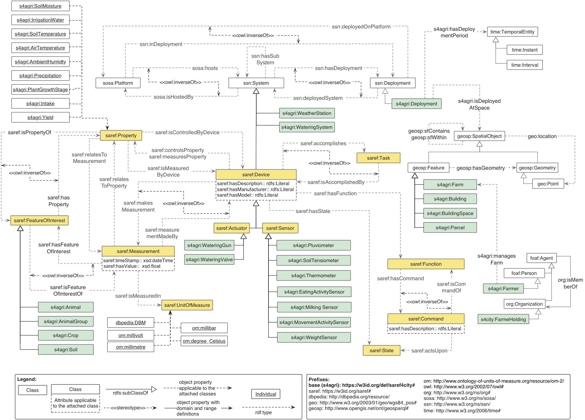
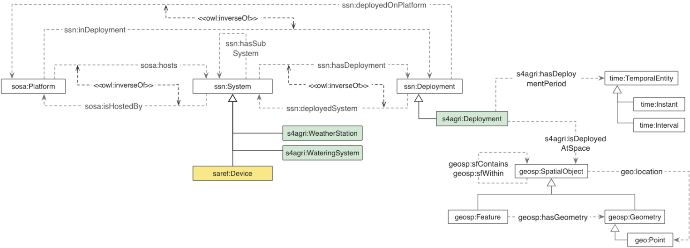
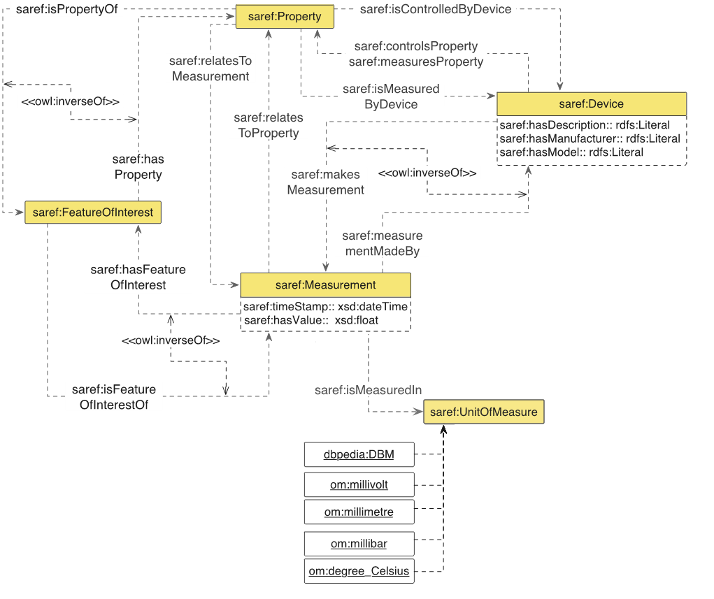
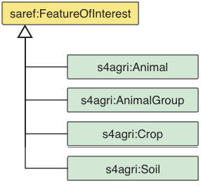
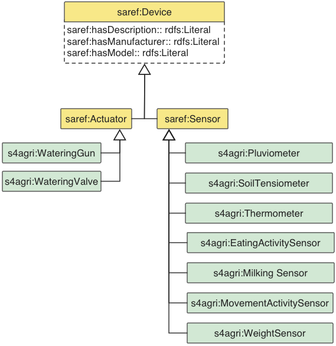
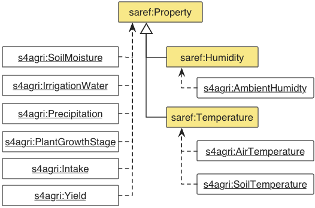
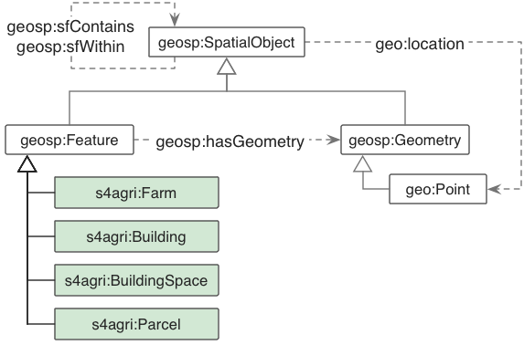
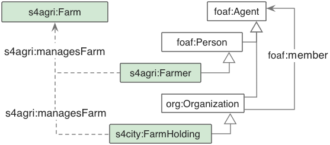

An overview of the SAREF4AGRI ontology is provided in Figure 1. For all the entities described in the present document, it is indicated whether they are defined in the SAREF4AGRI extension or elsewhere by the prefix included before their identifier, i.e. if the element is defined in SAREF4AGRI, the prefix is s4agri, while if the element is reused from another ontology it is indicated by a prefix according to Table 1.
Arrows are used to represent properties between classes and to represent some RDF, RDF-S and OWL constructs, more precisely:
Datatype properties are denoted by rectangles attached to the classes, in an UML-oriented way. Dashed boxes represent local restrictions in the class, i.e. datatype properties that can be applied to the class they are attached to.
Individuals are denoted by rectangles in which the identifier is underlined.
Note that Figure 1 aims at showing a global overview of the main classes of SAREF4AGRI and their mutual relations.

The model defined in SAREF4AGRI for representing platforms, systems and deployments is depicted in Figure 2. The main entities in the modelling are represented by the ssn:System and ssn:Deployment classes. Note that the design patterns for modelling these concepts have been taken from the W3C SSN ontology and, as a best practice for reuse, the SAREF4AGRI model refers directly to the URIs of the SSN (http://www.w3.org/ns/ssn/) and SOSA (http://www.w3.org/ns/sosa/) ontologies.
The ssn:System class in the SSN ontology represents a system and is components as specific devices, actuators or sensors. Moreover, the ssn:Deployment class from the SSN ontology describes the deployment of one or more systems on a ssn:Platform for a particular purpose for a given time period. SAREF4AGRI defines a saref:Device as subclass of an ssn:System and extends the ssn:Deployment class by means of the s4agri:Deployment class. In this way, it is possible to represent a specific installation of a certain agricultural system (e.g. a smart irrigation system) in a given space (expressed by means of the property s4agri:hasDeploymentPeriod) and at a given temporal frame (expressed by means of the property s4agri:isDeployedAtSpace) where SAREF4AGRI devices (e.g. a pluviometer, a soil tensiometer, a weather station and a watering gun) can be deployed. The deployment can involve a given ssn:Platform which hosts the system deployed in such deployment. In order to represent temporal information the TIME ontology has been reused. For the geographical information both the GeoSPARQL ontology (http://www.opengis.net/ont/geosparql#) and the WGS84 Geo vocabulary (http://www.w3.org/2003/01/geo/wgs84_pos#) are reused.

As shown in Figure 3, the modelling of measurements in SAREF4AGRI relies on the measurement model proposed in SAREF to express information about a certain property to be measured, its measured value, its measurement unit and the time of the measurement.
This modelling includes the saref:FeatureOfInterest (whose design pattern has been taken from the W3C SSN ontology) that provides the means to refer to the real world phenomena that is being observed in a given measurement (e.g. a cow can be defined in SAREF4AGRI as the feature of interest of a weight measurement made by a weight sensor). The reader is referred to the SAREF specification [1] for details about the modelling of measurements, whereas the present document includes details only for the new concepts created in SAREF4AGRI, such as the classes and instances added to support the livestock farming and smart irrigation use cases. Note that a work item ETSI TS 103 264 [1] has been opened to evolve the current SAREF core specification ETSI TS 103 264 [1] according to the latest developments in various sectors, including the input from the SAREF4AGRI extension in the present document. ETSI TS 103 264 [1] work item will result in an updated SAREF 3.0 core ontology. The following properties (to be included in SAREF 3.0) are reused in SAREF4AGRI to complete the model of measurements:

In order to support the Smart Irrigation use case, a number of units of measure have been added to SAREF4AGRI as instances of the saref:UnitOfMeasure class, namely dbpedia:DBM (decibel-milliwatts), om:millivolt (millivolt), om:millimetre (millimetre), om:millibar (millibar) and om:degree_Celsius (degree Celsius). Additionally, for the livestock farming use case the om:Liter unit has been added. These instances have been reused from DBpedia (https://wiki.dbpedia.org/) and the Ontology of units of Measure (OM) 2.0 (http://www.ontology-of-units-of-measure.org/).
In order to support the livestock farming use case (and potentially other use cases such as arable farming and horticulture in future SAREF4AGRI releases), the s4agri:Animal, s4agri:AnimalGroup and s4agri:Crop classes have been added to SAREF4AGRI as subclasses of saref:FeatureOfInterest (see clause 4.2.4).
In this way, measurements from relevant sensors (such as on animal activity movement, temperature, weight, milking yield, etc.) can be related via the isMeasurementOf relation to specific e.g. (groups of) animals that are instances of the saref:FeatureOfInterest class. This relation is explained in more detail in the following clause.
The main features of interest in SAREF4AGRI currently support (aspects of) the livestock farming and smart irrigation use cases and are represented by the s4agri:Animal, s4agri:AnimalGroup, s4agri:Crop and s4agri:Soil classes that are shown in Figure 4.

The s4agri:Animal class describes an animal that can be classified in SAREF4AGRI reusing the TAXRANK taxonomy vocabulary (http://purl.obolibrary.org/obo/taxrank.owl#). Besides the reuse of the TAXRANK taxonomy vocabulary, an animal is furthermore defined in SAREF4AGRI in order to have a birth and death date. An animal also has a unique identifier and can be part of one or more s4agri:AnimalGroup that are used to conduct experiments and observations on the livestock. Note that animals can be also specialized using subclasses, as is shown in the example in clause 4.3.1 with the ex:LactatingCow class that was created as a subclass of s4agri:Animal. Animals and animal groups are related to measurements via the saref:FeatureOfinterest concept of SAREF (see clause 4.2.3).
The s4agri:Soil class represents the upper layer of the earth in which plants grow. The s4agri:Crop class describes a collection of homogeneous plant species that is grown on a large scale commercially (especially a cereal, fruit, or vegetable) and is planted on a single location. A s4agri:Crop is grown on some s4agri:Parcel, which is an area of land, defined in SAREF4AGRI as subclass of the geosp:Feature (see clause 4.2.6). Moreover, s4agri:Crop is related to measurements via saref:FeatureOfInterest (see clause 4.2.3).
SAREF4AGRI extends the device hierarchy defined in SAREF in order to include devices needed to support the livestock farming and the smart irrigation use cases. These devices are shown in Figure 5. The devices included for the Smart Irrigation use case are: s4agri:Pluviometer, s4agri:SoilTensiometer, s4agri:WeatherStation, and s4agri:WateringGun. The devices included for the Livestock Farming use case are: s4agri:MovementActivitySensor, EatingActivitySensor, s4agri:MilkingSensor, and s4agri:WeightSensor.

SAREF4AGRI extends the property hierarchy defined in SAREF in order to include properties needed to support the livestock farming and the smart irrigation use cases. These devices are shown in Figure 6. The properties included for the smart irrigation use case are: s4agri:SoilMoisture, s4agri:IrrigationWater, s4agri:SoilTemperature, s4agri:AirTemperature, s4agri:AmbientHumidity, s4agri:Precipitation and s4agri:PlantGrowthStage.
The properties included for the livestock farming use case are: s4agri:Yield (which can further be specialized in subclasses, such as MilkYield, CropYield, MeatYield, MilkYield, etc. as needed) and s4agri:Intake (which can further be specialized in subclasses, such as FoodIntake for animals, FertilizerIntake for crops, etc. as needed).

SAREF4AGRI adopts the same topology modelling pattern that is adopted in the SAREF4CITY extension [i.3], where existing standard ontologies have been reused for this purpose. As shown in Figure 7, for representing spatial objects in SAREF4AGRI, the geosp:SpatialObject class from GeoSPARQL has been reused along with its subclasses geosp:Feature, geosp:Geometry and the properties geosp:sfContains, geosp:sfWithin and geosp:hasGeometry. In addition, the class geo:Point and the property geo:location have been reused from the "WGS84 Geo Positioning vocabulary" (which is the W3C de-facto standard for geographical information) in order to be able to indicate that something is located at certain coordinates.

For the purpose of SAREF4AGRI, the geosp:Feature class has been extended with the following subclasses:
A s4agri:Farm can contain one or more s4agri:Building and s4agri:Parcel (via the geosp:sfContains relation). Note that these types of feature are used in the present document as examples, but more feature types (and building types) can be added as needed. Moreover, a s4agri:Building can be further decomposed in one or more s4agri:BuildingSpaces (once again via the geosp:sfContains relation). As subclasses of geosp:Feature, all the classes mentioned above inherit the possibility to have a physical geometric description using geosp:Geometry, if needed (e.g. especially relevant for s4agri:Parcel). As subclasses of geosp:SpatialObject, all the classes mentioned above also inherit the possibility to use the geo:location property to indicate that something is located at certain coordinates (e.g. especially relevant for s4agri:Bulding).
As it is modelled in the SAREF4CITY extension [i.3], also SAREF4AGRI reuses the FOAF vocabulary (http://xmlns.com/foaf/0.1/) and Schema.org vocabulary (https://schema.org/) to represent the concepts of Person and Organization. Figure 8 shows that in SAREF4AGRI the foaf:Person and org:Organization classes are extended with the s4agri:Farmer and s4agri:FarmHolding subclasses to describe farmers and their organizations. Both foaf:Person and org:Organization are subclass of foaf:Agent. Organizations (e.g. s4agri:FarmHolding) have members (e.g. farmers). Both s4agri:Farmer and s4agri:FarmHolding can manage some s4agri:Farm.
